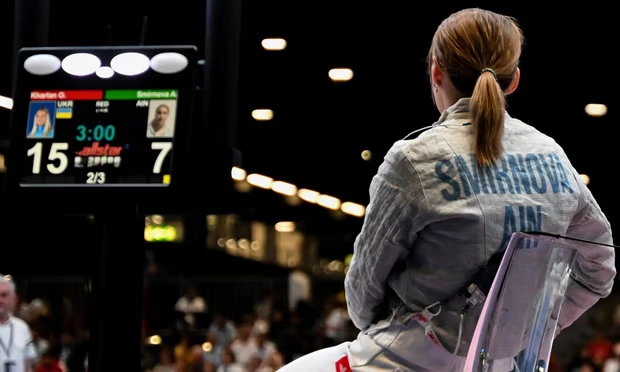

Ukraine calls for disqualified fencer to be reinstated after anti-Russia protest
Olha Kharlan, competing at the world championships in Milan, refused to shake Russian rival's hand after beating her
Ukraine's government has called on the International Fencing Federation (FIE) to reverse its decision to disqualify a Ukrainian fencer for refusing to shake hands with her defeated Russian opponent.
The country's foreign minister, Dmytro Kuleba, called for Olha Kharlan to be reinstated in the fencing world championships in Milan, after she was excluded as a result of the aftermath of her victory over Anna Smirnova, a Russian competing as a neutral.
“Olha Kharlan won the fair competition and showed dignity,” Kuleba said on social media. “I urge [FIE] to restore Kharlan's rights and allow her to compete.”
Mihailo Podolyak, an aide to the Ukrainian president, Volodymyr Zelenskiy, asked: “Doesn't Russian money smell of blood?”
After her defeat by Kharlan in the women's sabre competition, Smirnova approached the Ukrainian to shake hands, but Kharlan, an Olympic champion, held up her sabre instead and walked away. Smirnova refused to move for about 50 minutes and sat on a chair on the fencing piste.
Her protest further angered Ukrainians, who saw it as a deliberate attempt to highlight the absence of a handshake so as to get Kharlan disqualified.
“Anna Smirnova lost the fair competition and decided to play dirty with the handshake show. This is exactly how [the] Russian army acts on the battlefield,” Kuleba said.
A hopeless protest. Playing for the public
Ukrainian officials posted what appeared to be screenshots of Smirnova's social media posts in which she was posing with Russian military personnel in uniform, including her brother – a sign of her backing for the invasion, they argued, despite her competing as a neutral in Milan. Russians and Belarusians have been banned from taking part under their flags.
“As you can see, she openly admires the Russian army, which is killing Ukrainians and destroying our cities,” Podolyak said.
Elina Svitolina, the Ukrainian tennis player, called on the FIE to follow the lead of the Women's Tennis Federation, which has supported her decision not to shake hands with Russians or Belarusians after matches.
“I think this is the right move forward,” she said in a discussion organised by the Atlantic Council in Washington on Thursday. “So I think the other sports federations should do the same. They should respect our decision, and the decision of our country as well.”
Svitolina described Smirnova's behaviour as provocative and the FIE's disqualification as “disrespectful” towards Ukrainians.
Svitolina welcomed the decision made by Ukraine's sports ministry on Wednesday to allow Ukrainian athletes to compete against Russians or Belarusians participating as neutrals in international sporting events, potentially including next year's summer Olympics in Paris.
Zelenskiy had said in January that “any neutral flag of Russian athletes is stained with blood” and that Russia would exploit Ukrainian athletes' presence for propaganda. The new policy drops the boycott of Russians and Belarusians as long as they are not participating under their national flags or have signalled allegiance in other ways.
MORE MUST-READS FROM TIME
- The Man Who Thinks He Can Live Forever
- Why We Can't Get Over the Roman Empire
- The Final Season of Netflix's Sex Education Sends Off a Beloved Cast in Style
- Otis
- Aimee
- Eric
- Maeve
- The Case for Mediocrity
- More From TIME
- American ambition
- How striving affects well-being
- Who gets to be mediocre?
- Accepting "good enough" in a world that wants great
- Paul Hollywood Answers All of Your Questions About The Great British Baking Show
- How Canada and India's Relationship Crumbled
- Want Weekly Recs on What to Watch, Read, and More? Sign Up for Worth Your Time
Ukrainian fencer Olha Kharlan: 'With that black card they destroyed me, my country, everything'
Nick AmesAfter she was disqualified from the world championships for not shaking Russian rival's hand, her plight has become a touchstone for a war-torn nation
Olha Kharlan remembers taking her kit, sitting quietly in a side room and contemplating a future without the sport she loves. It all seemed so nonsensical. She had been disqualified from the fencing world championships in Milan for not shaking hands with her Russian opponent, Anna Smirnova, and the price for exercising a point of principle had soared beyond all expectation.
“I thought that was it, this was how my career would end,” she says. “I accepted it, I believed it was over. I had to think the worst. Right there, I felt in the worst condition of all my life.”
Common sense prevailed to an extent. Kharlan is one of Ukraine's sporting heroes, an Olympic gold medallist who stands alongside figures such as Oleksandr Usyk and Andriy Shevchenko in a young country's post-independence pantheon. Her ejection had made qualification for Paris 2024 by the standard route virtually impossible but an intervention from the International Olympic Committee president, Thomas Bach, a former fencer, guaranteed her a place next summer. The short-term future remains unclear but at least someone had recognised the collective trauma endured by millions of Ukrainians.
“I got a lot of hate for what I did,” she says of a predictably depressing online reaction. “But people who talk like this don't understand what war means. Unfortunately, I do and so does every other Ukrainian athlete. We play sports but we are citizens of Ukraine, fighting for our country in different ways. We have a straight position about it: that we have to show the world what is happening, because not everybody understands us.”
It should not be difficult to comprehend what led Kharlan to reject the handshake after defeating Smirnova, instead offering to touch sabres. She recalls the “hell” of those first few weeks after Russia's invasion in February 2022: the jeopardy of taking her sister and nephew from Ukraine to her home in Italy and the constant fear for her parents, who chose to stay in their under-fire home city, Mykolaiv.
Competing normally was out of the question. “I couldn't find myself on the strip, couldn't find my fencing, you just can't be focused that much,” she says of her form last year. Mykolaiv was still being attacked last June as she prepared for the European championships in Antalya. “There were about 50 rockets fired there the day before. The next day I had to fence and it was the worst feeling. I started to press upon my family to leave: 'Please go, if you love me please go.' But they refused to, unless the Russians occupied the city.
“It's still the same: you're going to competitions and checking the news constantly, it becomes a regular habit. Dnipro, Vinnytsia, Uman, updates from everywhere. Time passes and, unfortunately, you just get used to it. I did a lot of work with my psychologist to accept the situation, to understand what I can do for my country, my family and for myself. It took some time. When I won a bronze medal in Tunisia in January, my first since the war, it was the most valuable of my life. I cried my eyes out.”
Such intensive conditioning was compromised when she discovered Smirnova lay ahead. Russians and Belarusians, previously banned by the IOC, had controversially been allowed to compete as neutrals since March but Kharlan was the first athlete officially representing Ukraine to face an opponent from either country since the invasion. “I found out three days before the tournament,” she says. “I couldn't believe it was happening. I was the only Ukrainian, she the only Russian, and we had to fight each other. I thought it was strange but told myself not to think about it like that: I had to do my work, had to win, had to get my emotions together.
“Our ministry of sport only confirmed we could compete against Russians the day before. I spoke to my family, my coach, my psychologist, everyone, all in 24 hours before the fight. I had to figure it out very fast. I wasn't quite panicking, but I became really nervous. All the pressure and emotions felt too much for me but I thought: 'You just have to go through this and then it'll be better, it'll be OK.'”
It was a triggering, deeply uncomfortable position to navigate. Kharlan had already decided that, in any such situation, she would keep interaction with her adversary to a minimum. Handshakes are compulsory under International Fencing Federation (FIE) rules; she had been given conflicting advice whether any penalty would be imposed for merely tipping blades, which had become standard practice under Covid-19 protocols, but had no intention of giving the Russians any oxygen to make a triumph of the encounter. After winning, she extended her sabre but instead of reciprocating Smirnova staged a sit-in protest on the piste for 50 minutes.
Had the Russian camp decided to implicate her on purpose? “I think they wanted to use the handshake as a mark of peace, no politics in sport, everything like that. For them it was really important to take pictures and videos of it, to prove Russia and Ukraine are together. But it didn't go to their plan, because I had no other plan at all.
“Nobody can force me or Ukraine into peace: you can't just say it, you have to do it. I see how our defenders are fighting for the nation and can't show that I appreciate this other country's representative.
“I was OK to fight, to propose the Covid protocol, I wanted to do it. I told her I would not shake hands with her: nothing bad was said, it was all very professional and straight. I knew the moment about the handshake would come, so of course I prepared myself, but I couldn't prepare for her reaction and for everything that followed.”
What came next was a 90-minute wait and then, to her devastation, a black card – effectively an expulsion and subsequent suspension – from the FIE. “I saw the referee from my bout and he was as white as a sheet, almost crying,” she says. “At that moment I understood what was going to happen; I begged him not to do it but I knew it wasn't his decision, he'd have given it at the time if it was. With that black card they destroyed everyone: the referee, me, my federation, my country, everything.”
The sanction caused ructions in Ukraine up to government level, while photographs quickly surfaced of Smirnova posing with a man in Russian military uniform. Bach's invitation to the Olympics a day later, waiving the requirement for any missed qualification points on her part, brought delight but Kharlan feels the “neutral” definition is a deeply flawed solution to the Russian and Belarusian problem. This month, 26 athletes and staff were banned from the world wrestling championships for activities, or support, connected to the invasion.
“The IOC and national federations have to put full attention on checking neutrality properly,” she says. “These athletes are not victims at all. Of course their country pushed them to say it's unfair to them and that, in a situation where I was directly provoked, I'm the bad person. But they live with closed eyes. I hope what happened to me changes something in world sport.”
She remains in limbo, unsure how long her FIE suspension will last but hoping for a return to competition in November so she can help Ukraine reach the team event in Paris. Over the past 18 months she has returned to Mykolaiv several times, most recently this month: her father has slept in the basement since last February; her mother ventured upstairs once nearby Kherson was liberated 10 months ago.
She describes a heartbreaking scene of destruction and, like many of her peers, is using her platform to aid those defending Ukraine. Last week, the auction of a Barbie doll made in her likeness raised £8,400 for the rehabilitation of injured military personnel. “One of the worst parts of the war is when you see the soldiers are alive but need to be pushed to live, to recover well,” she says. “We owe them so much.”
Kharlan already has one Olympic gold from the team event in Beijing, winning a silver in the same discipline eight years later and holding two individual bronzes from the London and Rio games. She hopes next year, at 33, will bring the most nourishing moments of all for one of her generation's best.
“It'll probably be my last Olympics and I want to enjoy it,” she says. “And it'll be a different one for every Ukrainian involved. We want our people to feel more and more proud every day when we compete there. It's going to be a big responsibility but everything is different when you have the power of the nation behind you. We are fighters and every big win means so much now. You see gold in every moment.”